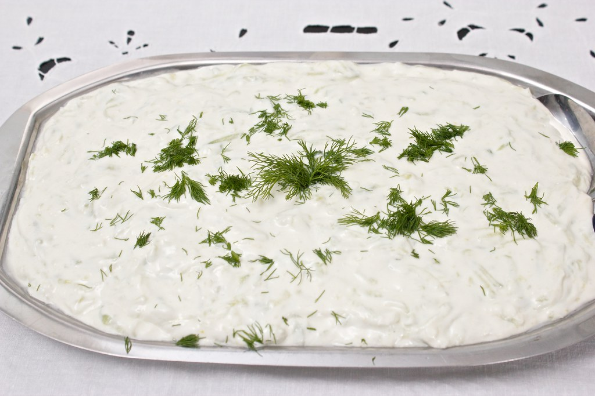

Home
Vegan Tzatziki

"Tzatziki" by futureshape is licensed under CC BY 2.0 
 .
.
Description
Tzatziki is a famous dish from Southeastern Europe made of salted yogurt mixed with cucumbers, garlic, lemon juice and herbs. It often serves as a side dish or dip and combines well with flatbread. This recipe teaches you how you can quickly make your own vegan version of this popular dish.
Ingredients
- 1/2 cucumber
- 260g unsweetened soy yogurt
- 2 garlic cloves, crushed
- 1/2 lemon, juiced
- 5 ml olive oil
- salt
- pepper
- (optional) fresh dill
Steps
- Grate the cucumber with a box grater and drain off the excess liquid by squeezing the grated cucumber firmly with your hands.
- Add the pressed cucumber along with all the other ingredients to a bowl. Mix, and enjoy!
Original recipe by Pick Up Limes